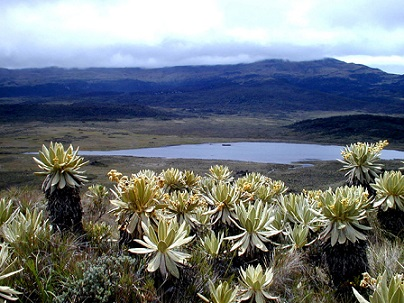
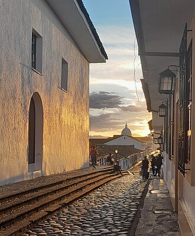
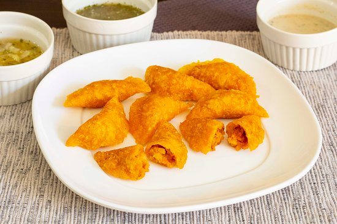

Bienvenidos al Cauca
El Cauca es un departamento de Colombia reconocido por su riqueza cultural, sus paisajes naturales y sus tradiciones. Su capital es Popayán, conocida como la Ciudad Blanca.
¡Descubre la belleza, la historia y las tradiciones de nuestra región!
Lugares y tradiciones del Cauca
El departamento cuenta con lugares históricos, paisajes naturales y una gastronomía llena de sabor. Estos son algunos ejemplos para conocer nuestra región.

Parque Natural Puracé
Un lugar de montañas, naturaleza y paisajes que permiten apreciar la riqueza natural del departamento.

Popayán, Ciudad Blanca
Popayán se destaca por su arquitectura colonial, sus iglesias y sus tradiciones históricas y culturales.

Gastronomía caucana
La región ofrece preparaciones tradicionales como las empanadas de pipián y otros platos representativos de su cultura.
Sabores tradicionales
La gastronomía caucana reúne recetas transmitidas entre generaciones. Las empanadas de pipián son una preparación representativa de Popayán.
La comida tradicional es una forma de conservar la identidad y compartir las costumbres de la región.